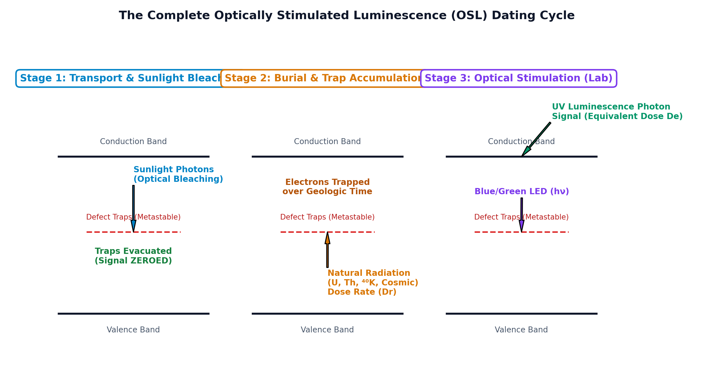

Optically Stimulated Luminescence (OSL) dating is a revolutionary trapped-charge geochronological technique that determines the elapsed time since ubiquitous mineral grains (principally quartz, $\text{SiO}_2$, and potassium feldspar, $\text{KAlSi}_3\text{O}_8$) were last exposed to sunlight or heat. The physical mechanism operates through solid-state defect crystal lattices:
Where $D_e$ is the total ionizing radiation dose accumulated by the mineral since burial, and $\dot{D}$ is the annual dose rate emitted by radioactive decay in the host sediment and cosmic radiation.

For a trapped-charge clock to measure the true geological or archaeological age, the stored charge in the crystal traps must be completely evacuated (zeroed) at the starting event of interest ($t = 0$):
Why are (iii) Intrusive igneous rocks (granites, gabbros) and (iv) Metasedimentary rocks (quartzites, schists) fundamentally unsuitable for determining geological crystallization or metamorphic ages via OSL?
| Geochronological Method | Primary Target Minerals | Clock Resetting (Zeroing) Mechanism | Effective Dating Range | Primary Geological & Archaeological Applications |
|---|---|---|---|---|
| OSL (Optically Stimulated Luminescence) | Quartz ($\text{SiO}_2$), K-Feldspar | Daylight exposure (bleaching) or Thermal firing ($> 450^\circ\text{C}$) | $\sim 10\text{ years to } 300,000\text{ years}$ | Aeolian sand dunes, loess, fluvial terraces, coastal beach ridges, pottery, bricks |
| TL (Thermoluminescence) | Quartz, Feldspar, Calcite, Zircon | Heat / Thermal firing ($> 450 - 500^\circ\text{C}$) | $\sim 100\text{ to } 500,000\text{ years}$ | Ancient pottery, burnt flint tools, kiln slag, volcanic ash/tephra |
| ESR (Electron Spin Resonance) | Tooth enamel (hydroxyapatite), corals, speleothems | Biomineralization (formation) or daylight bleaching in fault gouge | $\sim 5,000\text{ to } 2,000,000\text{ years}$ | Fossil tooth enamel, marine shells, carbonate speleothems, active fault gouge |
| Radiocarbon ($^{14}\text{C}$) | Organic carbon (wood, charcoal, bone, shell) | Death of organism (cessation of $^{14}\text{C}$ atmospheric exchange) | $\sim 300\text{ to } 50,000\text{ years}$ | Holocene and Late Pleistocene organic remains, peat bogs, archaeological charcoal |
| Cosmogenic Radionuclides ($^{10}\text{Be}, ^{26}\text{Al}$) | Quartz in surface boulders | Exposure to secondary cosmic rays at Earth's surface | $\sim 1,000\text{ to } 4,000,000\text{ years}$ | Glacial moraine boulders, fault scarp exposure, bedrock erosion rates |
| Fission Track Dating | Apatite, Zircon, Sphene | Cooling below closure temperature ($T_c \approx 110^\circ\text{C}$ for apatite) | $\sim 100,000\text{ to } 10^9\text{ years}$ | Tectonic exhumation, orogenic cooling rates, sedimentary basin thermal history |